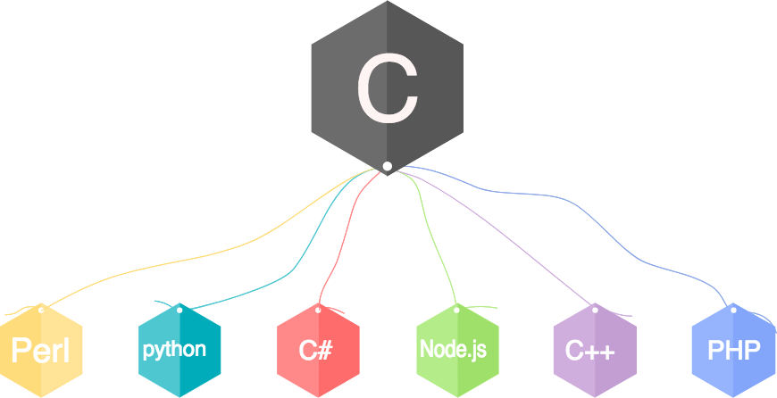
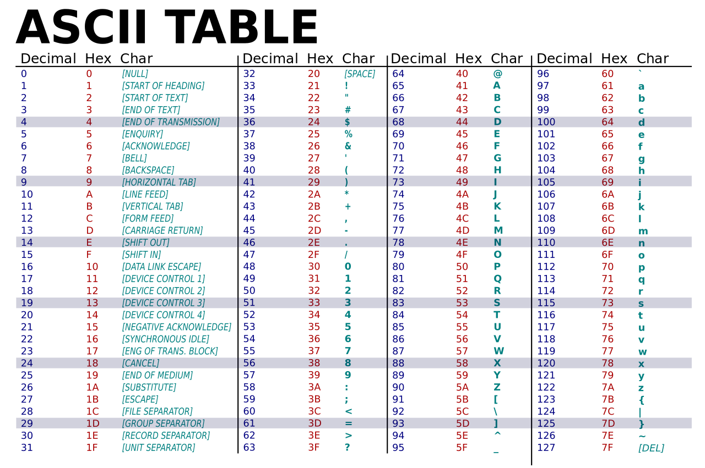

A program is a set of instructions written on a computer to perform a specific task.
Simply said, it is a language used to write a program.
It is a well defined medium to instruct the computer.
Based on uses, the Programming languages can be classified under 50 types refer List of Programming Languages by type
Based on ease of readability:
Based on execution method:
A few basic instructions that appear in almost all language (by Allen Downey, in his book How To Think Like A Computer Scientist):
C is a general-purpose, procedural computer programming language supporting structured programming, with a static type system.
By design, C provides constructs that map efficiently to typical machine instructions.
It is generally used to learn basic programming concepts. C language is being used to build other High level
programming languages like python.

/**
* Basic Structure of a C program.
* It is the documentation section
*/
#include<stdio.h>
// definition and global declarations
int main(){
//Declaration and Initialization
//Statements
return 0;
}
The first few lines define what is called a documentation. This section contains a multi line comment describing the code. The details on comments are discussed below.
Next is the link for the compiler to indicate header files that are being used from the library.
Header files are documents that define the symbols that are used in the program.
Here stdio.h header file is linked.
The next section is the area of definition of constants and Global variables
Below this is the area of code.
The
mainfunction is the point of code at which execution of the program startsMore details on
functionswill be discussed later.
Data can be defined as a representation of facts, concepts, or instructions in a formalized manner, which should be suitable for communication, interpretation, or processing by human or electronic machine.
Data type is an attribute which tells the compiler or interpreter how the programmer intends to use the data.
Basic Types:
true and falseASCII - American Standard Code for Information Interchange

Derived Data Types:
Additional types in integers (Base):
DerivedorNon primitivedata types and thetypes of integerswill be discussed later
Literals are data that are directly used or processed in a program. If your program contains direct values
like 10, 3.14159, 'a' or "str", they are known as
literals
There are certain rules to be followed while naming an identifier:
'_') like a1, a2, _name not 1a, 24cNaming Conventions: Naming Convention - Wikipedia article
For Easy readability:
Naming convention for multi word variable names:
E.g.: age, input_values, firstName, number, prime_num
Not: user name, number_to_find_prime
Variables (data type), Naming Convention
Words used for a special purpose in program.
E.g: scanf, printf, int, if, for,
try, etc.
Declaration is the process of defining the variables’ or constants’ names to be used in the program.
Syntax:
<type> variableName;
Multiple variables of same type can be declared on the same line, being separated be comma.
Eg:
int age, num1;
char ch;
Initialization is the process of assigning values to the variables declared. It is done
using assignment operator =. (For Details, check Assignment operators in Part 2)
Eg:
age = 10;
ch = 'a';
Both Declaration and Initialization can be done in the same statement, for multiple variables
int age = 20, num2 = 10;
char ch = 'z';
In C, constants are declared and initialized in a single line using the const
keyword.
Syntax:
const type variable_name = value;
Syntax:
printf("format specifier", identifier);
printf("statement");
%d - integer (int)%f - float%c - character (char)%s - string (str)%lf - doubleIdentifiers - variables or expressions
Writing your first Program - printing “Hello World”
Modifiers are key words that modify the default state of int and char data types.
There are 4 modifiers in C:
1. short:
It limits user to store small integer values from -32768 to 32767. It can be used
only on int data type.
short int myShortInt = 10;
2. long:
It allows storage of large value than default limit for int. Tt can be use once or twice to
mention the limits.
long int myLongInt;
long myLongerInt;
long long myLongLongInt;
3. signed:
It is default modifier of int and char data type if no modifier is specified. It
says that user can store negative and positive values.
int myValue = -289;
signed int myValues = -544;
4. unsigned:
When user intends to store only positive values in the given data type (int and
char).
unsigned int myVal = 10;
To check the limitations of the modifiers, check Part 3
Having understood the modifiers in C, we can look at the complete list of format specifiers.
| Format Specifier | Type |
|---|---|
%c |
Character |
%d |
Signed integer |
%e or %E |
Scientific notation of floats |
%f |
Float values |
%g or %G |
Similar as %e or %E |
%hi |
Signed integer (short) |
%hu |
Unsigned Integer (short) |
%i |
Unsigned integer |
%l or %ld or %li |
Long or long int |
%lf |
Double |
%Lf |
Long double |
%lu |
Unsigned int or unsigned long |
%lli or %lld |
Long long |
%llu |
Unsigned long long |
%o |
Octal representation |
%p |
Pointer |
%s |
String |
%u |
Unsigned int |
%x or %X |
Hexadecimal representation |
%n |
Prints nothing |
%% |
Prints % character |
These are the basic format specifiers. We can add some other parts with the format specifiers. These are like below −
A minus symbol (-) sign tells left alignment
A number after % specifies the minimum field width. If string is less than the width, it
will be filled with spaces
A period (.) is used to separate field width and precision
Lines that are not executed. It used only for understanding by the programmers or users.
// is used to comment a single line
/**/ - comment multiple lines
// single line comment
/*
This is used to comment multiple lines
*/